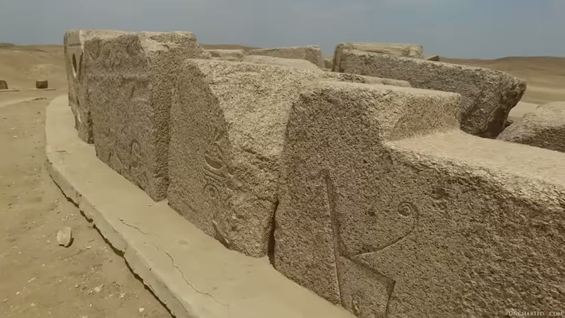
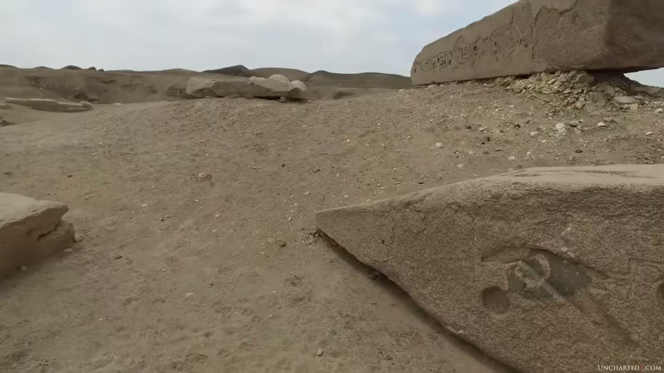
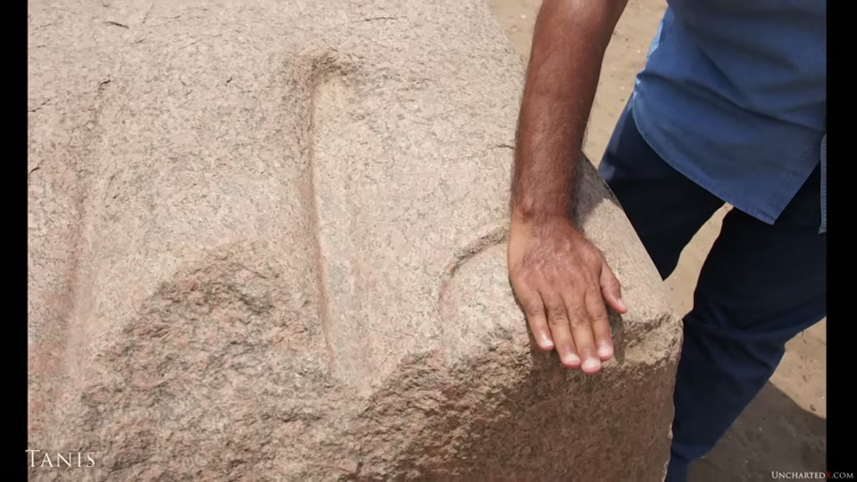

UnchartedX
Ancient Tanis, Ramses II, and the Largest Stone Statue Ever Made..
Ben · 42 min · watch on YouTube · summarised 2026-10-01
The most quotation-heavy entry in the UnchartedX set, and nearly all of it is Petrie. The argument is about dating by inscription, and the evidence offered for it is a Victorian excavator's own published complaints about how often the inscriptions at Tanis had been changed.
Published five weeks before the logistics entry, which Ben announces in the postscript as the place the cut material went. Its companion survey two years later is the colossal statues entry.
The site
02:25–06:30. Tanis sits in the Delta farmland several hours north of Cairo, known also as San, Djane and the biblical Zoan. Ben notes the satellite imagery shows single-piece granite obelisks and columns lying on the ground.
He deals with the Indiana Jones association directly 03:57–05:11 and corrects it: the year-long sandstorm of Raiders of the Lost Ark never happened, the site was rediscovered in the 18th century, and the first scientific work was on Napoleon's expedition of 1798. What the film got right, he says, is Shishak — identified as the pharaoh Sheshonq I, who did sack Jerusalem around 980 BC and whose remains were found at Tanis. He states plainly that there is no map room, no well of souls and no evidence the Ark was ever kept here, adding that it may have been at Elephantine for a time — the claim he credits elsewhere to Graham Hancock, in the Elephantine entry.
The treasure 05:11–06:33. Pierre Montet found an untouched royal tomb complex here in 1939 — gold funeral masks, a silver coffin, jewellery — a find Ben says would have made Tanis as famous as Tutankhamun's tomb had the Second World War not broken out over it.
The scale of what is left 06:33–08:10. The temple complex is given from historical accounts as about 1,500 by 1,200 feet (450 by 265 m), its core of granite blocks that Petrie estimated at more than 20 tons each. Around it once stood a mudbrick wall 70 feet thick, 50 feet high and 3,500 feet long, of more than 20 million bricks, now almost entirely washed away. For scale on the granite, Ben points at a single cartouche carved into a block and invites the viewer to work back from its size.


What is left of the temple complex, and the size of the writing on it.
The objection to dating by inscription
08:10–10:30. His statement of it is compact: "all you are really doing by dating the writing on a box or an obelisk is dating the writing itself. It really says nothing about the origins of the object, only of the writing." The Serapeum boxes are his reference case, held as the Serapeum entry.
At Tanis he adds a second problem on top of that one — rebadging: chiselling off older inscriptions and cutting fresh ones. The rest of the video is evidence that this happened here, repeatedly, and it is almost all Petrie's.
Petrie, at length
This is the substance of the entry. Ben reads from Petrie's Tanis volumes and from Ten Years' Digging in Egypt, and the passages do the arguing.
On the site's own identity 10:30–11:12, from volume 2:
"The local mythology of a city is to be learnt from the dedications of its temples… At Tanis the case is very different, and nothing can yet be considered certain with regard to it."
The Louvre sphinx 17:02–18:04, red granite, one of a matching pair found at Tanis. Petrie's account is of four successive appropriations of one object:
"These sphinxes have passed through many appropriations, but they were executed in the 12th Dynasty, to judge by the fineness of the work… On the chest of the sphinx in the Louvre may be seen traces of the so-called banner of a king, with a hawk above it; a fragment of the end of a sickle may also be distinguished on it, and this shows that it must be attributed to Amenemhat II or Usertesen II. The next name is that of the Hyksos Apepi… After this Merenptah appropriated it, cutting out the earlier names with his usual brutality, and placing his cartouches on the right shoulder. Finally Sheshonq I, the great Shishak, occupied the left shoulder with his cartouches and cut a long inscription all around the base."


A polished object and the glyphs cut into it.
The two seated female statues 19:08–20:37, black granite, which Petrie put in the early 12th Dynasty — and whose reworking he describes feature by feature:
"Ramessu II afterwards took this statue and had all the dress worked up into a ribbed pattern of folds, leaving parts of the old smooth surface at a higher level just in the hollows under the arms. The hair was also worked into wavy tresses, parts of the old surface remaining also here. The face appears to be untouched, judging by its style and high finish. The outer part of the balls of the thumbs were cut away towards the wrists, apparently being considered too massive and heavy for Ramesside style… The cutting is in the bold coarse style general in the Ramesside period, quite unlike the delicate and highly polished hieroglyphics of the 12th Dynasty on the front of the throne."
The obelisks 20:37–21:47. One red granite obelisk had its original engraving on the upper part of one side only; Ramesses added his name in two columns below and on every other face, erased the older king's names, and left "the trace of the older cartouche visible on the upper part". Petrie's verdict on another pair: "once again we must execrate the destructions of the 19th Dynasty."
That obelisk passage is shown as two cut-outs laid over one another, with a line of the printed page still visible behind the join, so the sentence about the "insatiable egotism of its usurper" is spliced to what precedes it rather than following directly. The printed text also carries Petrie's own cross-references — (Plan, 261), (shown in inscrip. 13), (see inscrip. 60) — which point at his plates and are not read out. The same thing happens with Selim Hassan's internal page references in the Sphinx Temple entry.

Petrie's account of one obelisk being taken over, as the video shows it.
Elsewhere he calls Ramesses II a "magnificent egotist" and "the ruthless appropriator of obelisks and statues".
And the unfinished one on site 13:48–14:28. Yousef Awyan shows Ben a block, probably once part of an obelisk and later built into a wall, where the recarving was abandoned part-way: the surface can be seen blending into the bird glyph at the end of the block, with new glyphs replacing old.

Recarving caught part-way through.
The Hyksos sphinxes in Cairo 14:28–15:30, black granodiorite, which Ben describes as polished and detailed enough that the ribs catch the light — carrying glyphs on the shoulder he calls vandalism, and a mane that appears to have been reworked.
The foot, and Petrie's arithmetic
22:21–27:28. The claim in the title, and it is Petrie's calculation rather than Ben's.
From Ten Years' Digging in Egypt:
"In this way I examined every block, and discovered the fragments of the enormous colossus of Ramessu II in red granite, which must have been about 80 feet high, and have towered far above the temple roofs amid the forest of obelisks which adorned the city. The toe alone is as large as a man's body."
Ben corrects Petrie on that last sentence 23:47–24:04, and shows his working: Petrie's own dimensions give the big toe as nearly 15 inches and the foot as nearly 60 inches, so he reads "toe" as a slip for "foot".
Then the full derivation from Tanis volume 1, read out in its entirety:
"Taking these scales of proportion, the figure alone of the colossus would be 796 inches by the pair of colossi, or 993 inches by the modern proportions… we shall not perhaps be far wrong in taking the mean of the two results, and saying that the figure alone was 900 inches, or 75 feet high… To this we must add the height of the crown… 174 inches high, or 14 and a half feet. To this again must be added the base of the figure… only 27 inches thick. Thus the whole block appears to have been about 1,100 inches, or say 92 feet high. This was, so far as is known, the largest statue ever executed."

The fragment the whole size argument is built from.
The chronology argument this entry's dating case belongs to is set out across the whole Old Kingdom in the Old Kingdom timeline entry.
This is the channel's video about the Tanis colossus, and its object is a foot — captioned "Tanis" on screen, found and measured by Petrie. The colossal hand that the Lahun box entry places at Tanis six months later is a different object, and the colossal statues entry places that same footage at Karnak.
Petrie's measurement table is on screen beside the passage, and the narration reads the conclusion rather than the table. It is headed "Width of" and gives, in inches, for the Great Colossus, the Pair of Colossi, and a modern foot:
| Width of | Great Colossus | Pair of Colossi | Modern foot |
|---|---|---|---|
| Great toe | 14·7 | 5·0 | 1·2 |
| Second toe | 12·5 | 3·0 | ·8 |
| Third toe | 10·4 | 2·0 | ·7 |
| Fourth toe | 11·2 | ⍵5·9 | ·7 |
| Fifth toe | 8·4 | ⍴ | ·6 |
| Whole foot | 57·2 | 15·9 | 4·0 |
| Figure alone | (900) | 221· | 69·5 |
The whole derivation is visible in it: 57·2 ÷ 15·9 × 221 gives Petrie's 796 inches, and 57·2 ÷ 4·0 × 69·5 gives his 993. The column header is "Width of", while the narration describes the same figures as lengths — "the big toe of this statue measures nearly 15 inches long, while the foot measured nearly 60 inches". The 900-inch answer is printed in brackets in the table's own Great Colossus column.


Where the 92-foot figure comes from.
Petrie's own reasoning that it was a monolith is read too, and it is an argument from parallels rather than from the object: Hatshepsut's obelisk at Karnak is 108 feet, the Ramesseum colossus is over 800 tons, "while on the other hand no example is known of a composite statue in Egyptian work, except where introduced as an architectural element" — so "vast as the size appears, there is no sufficient reason to suppose that it was not carved in one block of stone."
The comparisons Ben adds 26:17–27:28: the seated statue at the entry to Luxor temple is about 46 feet; the Colossi of Memnon around 60 feet and over 700 tons each; the Statue of Liberty and the Colossus of Rhodes are of similar height and both were hollow and built piecemeal from metal. His own estimate is that the Tanis statue would have topped 1,000 tons finished, from a quarried block "in the territory of, say, 1,500 tons or more".
What he makes of Ramesses
27:28–30:00. The position is explicitly a middle one: Ramesses reigned nearly 70 years over an Egypt at a height of its power, "undoubtedly he did build and expand structures", and he likely commissioned new work as well as appropriating old. Ben does not claim everything bearing the name was inherited.
What he disputes is the inference from name to maker, and he brings in the precision argument to do it: the faces of the Luxor and Ramesseum colossi are, on Christopher Dunn's analysis, too symmetrical to be any human face — held as the precision entry.
The Wikipedia entry, read as a case
34:20–37:00. Ben quotes the article's position — that Tanis is unattested before the 19th Dynasty, that the earliest buildings date to the 21st, and that anything older on the site was brought from elsewhere — and sets Petrie against it.
Petrie was convinced Amenemhat I, first king of the 12th Dynasty, built a temple here, on the evidence of a red granite colossus and many red granite column fragments:
"The greater part of the lower inscription has been hammered out by Merenptah I, in order to substitute a barren repetition of his own name in the rudest style, only the small strip of old titles being left in the middle… It seems certain that Amenemhat I built a temple here, as his statue was doubtless placed in some large building, and there are many fragments of columns of red granite which appear to belong to him. It is impossible to assign them to the Ramesside or any late period."
And Ben reports the limit Petrie himself put on the next step 37:40–38:08: blocks and inscriptions at Tanis appear to trace to Pepi of the 6th Dynasty, but Petrie admitted this was far from certain, and that the granite may have been imported from older sites and reused.
The conclusion
30:00–34:20. Inheritance from a pre-cataclysmic civilisation; the Younger Dryas at about 12,800 years ago; survivors passing on knowledge but not capability; Zep Tepi in the Egyptians' own records. His framing is that dynastic Egypt cannot be cleanly separated from the earlier builders — "rather I think we should be seeking to extend the timeline of Egypt far further back to them."
The postscript 39:49–41:10 states the argument's own boundary: "there's not really a lot of point in arguing about blocks that are two ton or ten tonne or 20 ton even in size — there's plenty of evidence that suggests that ancient civilizations were capable of moving those around. It's rather these extreme cases that we need to account for."
What you can check yourself
- Petrie's books are out of copyright and online. Tanis volumes 1 and 2 and Ten Years' Digging in Egypt carry every passage read out, including the Louvre sphinx's four appropriations, the reworked seated statues, and the full 1,100-inch calculation. The quotations can be compared word for word with the reading.
- The Louvre sphinx is on display in Paris, and the overlapping inscriptions Petrie describes — the hawk banner, the sickle, the cartouches on each shoulder — are on the object.
- The arithmetic is checkable. 796 and 993 inches, their mean of 900, plus 174 for the crown and 27 for the base, against the stated 1,100.
- The toe-versus-foot correction can be tested against Petrie's own published dimensions.
- The Wikipedia article can be read and compared with what is said about it; so can its history.
- Montet's 1939 finds are published and the objects are in Cairo.
- The unfinished recarving at Tanis is a physical block, photographable, where old and new glyphs meet mid-surface.
What the video does not settle
- The evidence for rebadging is documentary, and the conclusion drawn is older than the documents. Petrie records pharaohs recarving objects of the 12th Dynasty and of the Hyksos period. That supports reattribution within dynastic Egypt; it does not reach a pre-cataclysmic origin, and the video names no object at Tanis independently dated earlier than its earliest inscription.
- Petrie's two books give two heights and the video reads both without reconciling them. Ten Years' Digging in Egypt says the colossus "must have been about 80 feet high"; the Tanis volume derives about 92 feet for the whole block, 75 for the figure alone. Both passages are read out in sequence; the difference is not mentioned.
- Petrie's statue height rests on proportions, not on the statue. Two scales are used — the pair of colossi and "modern proportions" — they disagree by nearly 200 inches, and the figure used is their average. Petrie notes himself that the colossi's feet are "beyond all natural proportion".
- The monolith claim is an argument from absence. Petrie's reason for thinking it one block is that no composite Egyptian statue was known to him, and the piece had already been cut up when he found it.
- The tonnage is Ben's, not Petrie's. Petrie gives a height; the 1,000-ton finished and 1,500-ton quarried figures are added in the narration with no calculation shown.
- Nothing is measured on camera. The foot, the blocks and the sphinxes are filmed, not measured, and the 20-ton block estimate is Petrie's. The scale in the foot sequence is a hand laid against the toenail.
- The table on screen records widths and the narration calls them lengths. Whether the figures support reading Petrie's "toe" as a slip for "foot" depends on which dimension they are, and the video does not address the header.
- One Petrie passage is presented as two spliced cut-outs, with printed text still visible behind the join, so what sits between the two halves on the page is not shown. His own plate and inscription references are printed and unread.
- The symmetry claim is referred out, not demonstrated here; no face is compared or measured in this video.
- The "cannot be the face of any human" step goes further than the measurement it rests on, and no tolerance or comparison figure is given for it.
- The crude-glyph reading is aesthetic. That later inscriptions are visibly cruder is Petrie's observation as well as Ben's, but it is a judgement about finish, and no physical test separates the cutting of the glyphs from the carving of the objects.
- Tanis's own foundation date is left open, and Ben says so: "it will be almost impossible to ever really know for sure when this place was originally built."
- The ground-penetrating radar finding of deeper construction is mentioned without a source, date or result.